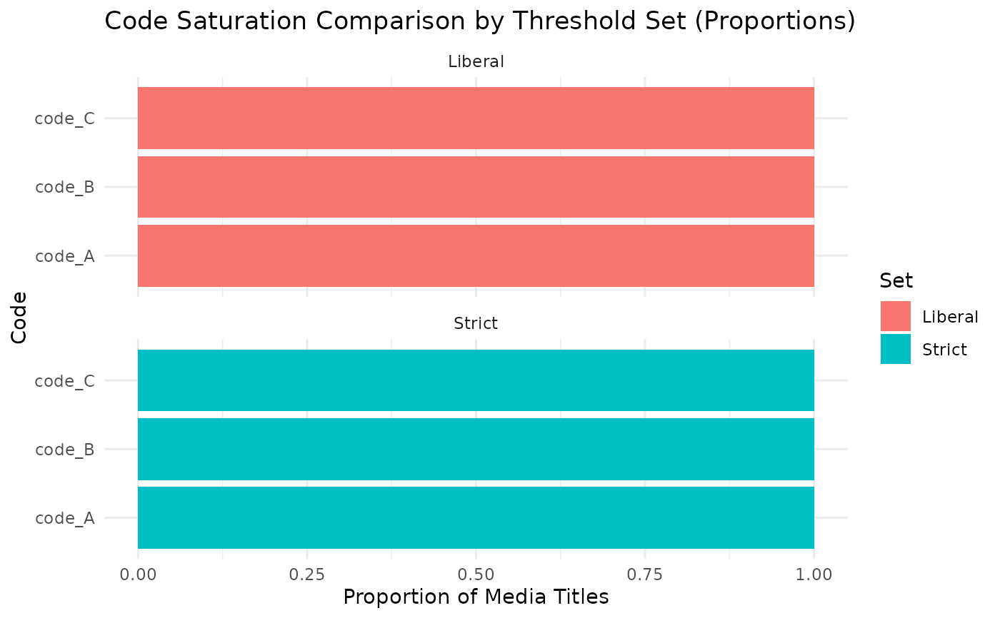
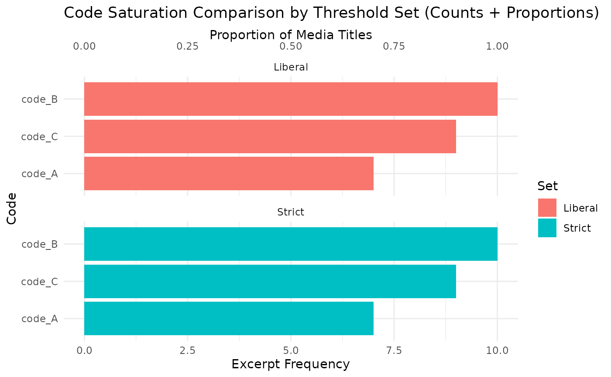

This function compares code saturation results from a code summary table
(typically generated by create_code_summary()) against one or more
threshold sets that define what constitutes "saturation" based on the
number of excerpts (count) and proportion of media titles (prop_media_titles)
where each code appears.
Optionally, the function can produce a faceted bar plot showing which codes meet each set of thresholds, with metrics plotted as counts, proportions, or both.
Arguments
- code_summary
A data frame or tibble, typically produced by
create_code_summary(), containing columns:code,count,n_media_titles, andprop_media_titles.- thresholds_list
A named list of threshold sets. Each element should be a list with numeric elements
code_countandprop_media_title. For example:list(Liberal = list(code_count = 3, prop_media_title = 0.2), Strict = list(code_count = 5, prop_media_title = 0.5)).- output_type
Character string specifying the output type: either
"tibble"(default) or"kable"for a formatted table.- plot
Logical; if
TRUE, generates a ggplot visualization of which codes meet each threshold set.- plot_metric
Character string specifying which metric to plot:
"count"— show excerpt frequencies only."prop"— show proportions of media titles only."both"— show both metrics with dual y-axes (counts on the bottom axis, proportions on the top axis).
Value
If plot = FALSE, returns either a tibble or kable table of results.
If plot = TRUE, returns a list with:
results: the tibble or kable table with logical columns indicating which codes meet each threshold set.plot: a ggplot2 object visualizing saturation across threshold sets.
Details
Each threshold set is applied independently. A code is considered to meet a given threshold set if both its excerpt count and proportion of media titles are greater than or equal to the respective thresholds.
Examples
# Example data: excerpts with coded logical columns
set.seed(123)
excerpts <- data.frame(
media_title = rep(paste0("Interview_", 1:5), each = 3),
code_A = sample(c(TRUE, FALSE), 15, replace = TRUE),
code_B = sample(c(TRUE, FALSE), 15, replace = TRUE),
code_C = sample(c(TRUE, FALSE), 15, replace = TRUE)
)
# Create a code summary table (from your package function)
code_summary <- create_code_summary(excerpts, output_type = "tibble")
#> # A tibble: 3 × 4
#> code count n_media_titles prop_media_titles
#> <chr> <int> <int> <dbl>
#> 1 code_A 7 5 1
#> 2 code_B 10 5 1
#> 3 code_C 9 5 1
# Define two saturation threshold sets
thresholds_list <- list(
Liberal = list(code_count = 3, prop_media_title = 0.2),
Strict = list(code_count = 5, prop_media_title = 0.5)
)
# Compare saturation (table only)
compare_saturation(code_summary, thresholds_list)
#> # A tibble: 3 × 6
#> code count n_media_titles prop_media_titles Liberal Strict
#> <chr> <int> <int> <dbl> <lgl> <lgl>
#> 1 code_A 7 5 1 TRUE TRUE
#> 2 code_B 10 5 1 TRUE TRUE
#> 3 code_C 9 5 1 TRUE TRUE
# Compare and plot using proportions
res <- compare_saturation(code_summary, thresholds_list, plot = TRUE, plot_metric = "prop")
res$plot

# Compare and plot both metrics with dual y-axes
res2 <- compare_saturation(code_summary, thresholds_list, plot = TRUE, plot_metric = "both")
res2$plot
